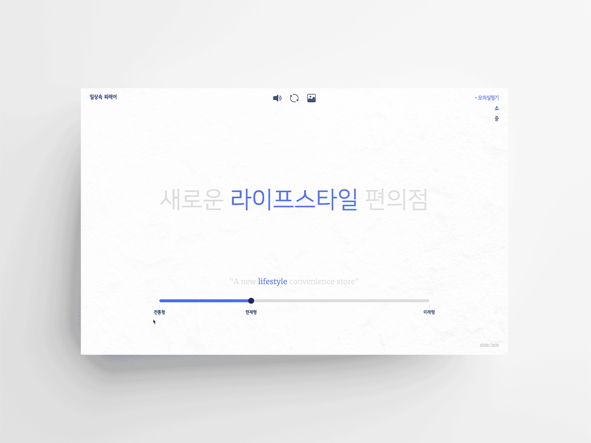
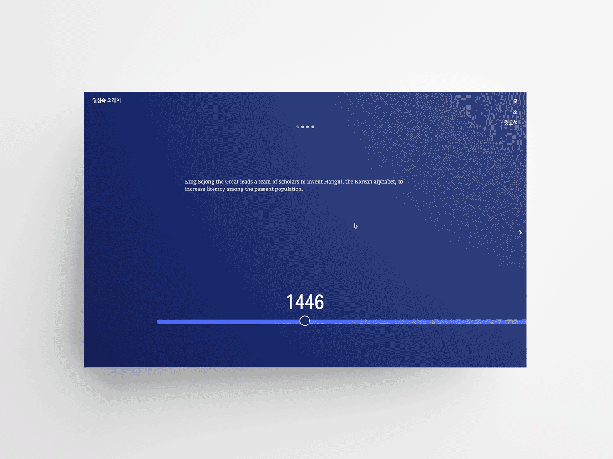
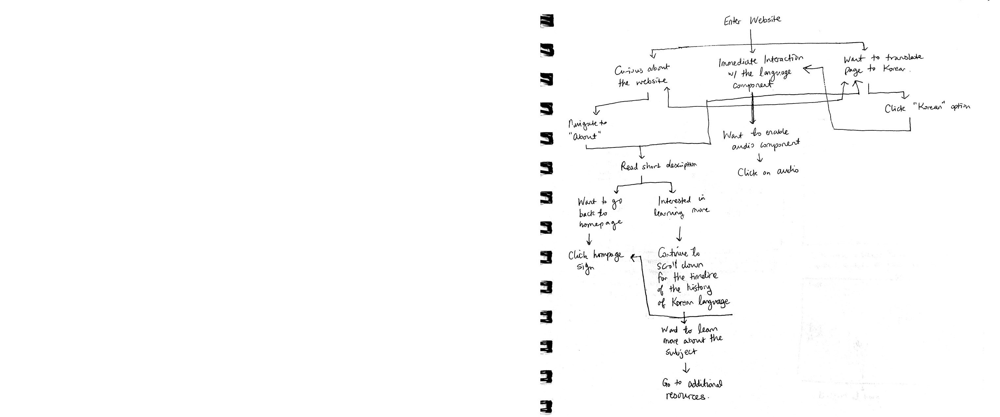
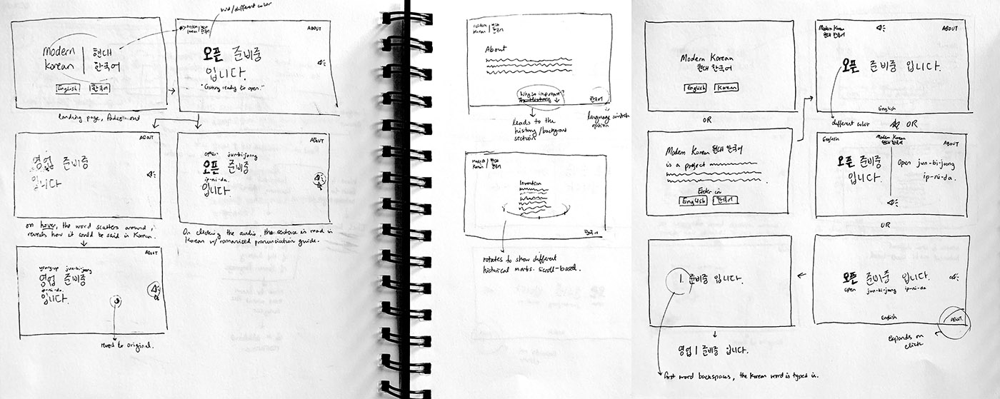
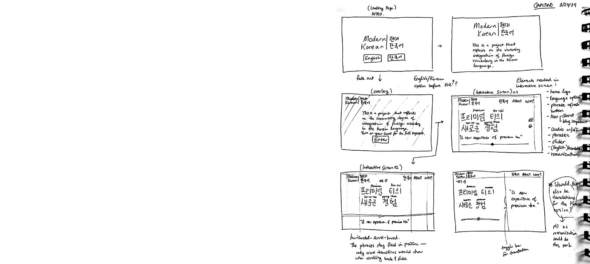
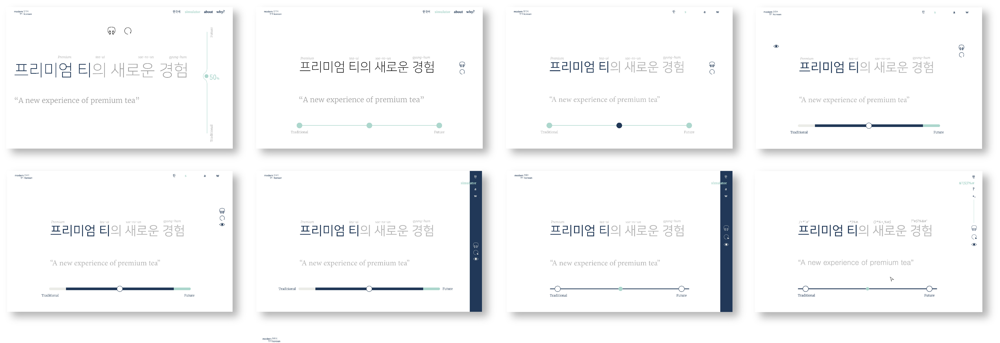

Capstone: Daily Loanwords
2019
For my senior capstone in interaction design, I created an interactive website for both desktop and mobile that reflects on the increasing degree of integration of loanwords in the Korean language today. Loanwords are words adopted from a foreign language with little or no modification. Being a language that uses a phonetic alphabetical system, it's extremely easy for Korean to adopt loanwords into its every day use.
As someone who's from Korea, this is a problem that I've noticed for the past few years because people have been using loanwords even when there are corresponding Korean words. The Korean language is a such a unique language that our ancestors have worked very hard to preserve — and seeing it slowly change into a more prominent mixture of loanwords made me strive to raise awareness of this problem.
About Page

Simulator Page

The simulator page is my main interactive page. I photographed signages or phrases that incorporate loanwords in public spaces in Korea, and I gave each of the phrases its own page with a slider. Each slider has 3 tenses, which are "traditional," "modern," and "future." Every simulator page will start on the "modern" state, which shows the phrase as I found it. The starting point on this state varies depending on the percentage of loanwords comprising each phrase. In the "traditional" state, I substituted all loanwords with pure Korean words. In the "future" state, I wanted to play around and show how absurd the phrases could get when only loanwords are used. As the states on the slider change, the user can see a visual shift from grey to blue.
The top row of three icons enhance the interactive experience further. Clicking on the speaker icon will play an audio recording of how each phrase is pronounced in Korean. The image icon will show each phrase in "modern" state as I found it in the real world.
Why Page
This page shows why one should care about this problem. I created a timeline with four important time marks in the history of the Korean language, from how it was created to how it became to be used with loanwords today.
Screen Recording On Laptop
Screen Recording On Mobile
PROCESS
What Do I Care About?
Before my last semester of college started, I thought about what subject I could possibly dedicate my entire semester into. After weeks of brainstorming, I decided to address a problem that I have noticed for the past few years in South Korean society — the degree of integration of foreign vocabulary in the Korean language. However, I had no idea how to tackle this problem.
During winter break, I went back home and collected as much supporting data as possible by taking photos of any loanword usage in the real world environment. The question of what and how still remained. When I came back to school, my peers and my instructor helped me finally set my capstone question: How can I raise awareness of the importance of preserving the Korean language in its purist form?
Identifying Target Audience and Experiential Takeaways
The target audience for my website is mainly native Korean speakers because I believe that this set of audience is the most involved with the issue yet unaware of the consequences. However, I decided to design my website so that non-Korean speakers could easily follow along as well.
With this in mind, I set the visual direction to flatter visuals than spatial depth to allow the users to focus on the language component since my website will be on the Korean language. In addition, audio recordings and visual aid (the photos I collected) were to support the written interactive component.
Initial Flowchart
Initial Design Direction Sketches
Low-fidelity Wireframes with Component Details
On the main interaction page, the user will learn that, looking at how a conversation or a phrase in the modern day is written, there is no doubt that it’s written in Hangul; however when one actually reads it and says it, one can hear how foreign vocabulary has been integrated.
Visual Explorations
I wanted to create an experience that allows the user to guide oneself through the timeline of how Korean has evolved. Once I discovered that using a slider as both a visual and interactive aid for my user case would be useful, I explored some visual layouts of the "simulator page."
Some Earlier Explorations Of the Interactive Page
Tweaking and Refining During Development
Once the visual direction was at a good point to move on, it was time for me to start translating my ideas into an interactive website. Per usual, as I started coding, I faced a lot of problems regarding the slider UI, toggle transitions, timeline construction, etc. A lot of refinements happened during the actual development time, rather than the previous visual design stage.
HTML, CSS, jQuery, Javascript, and Adobe Illustrator were used to create this project.